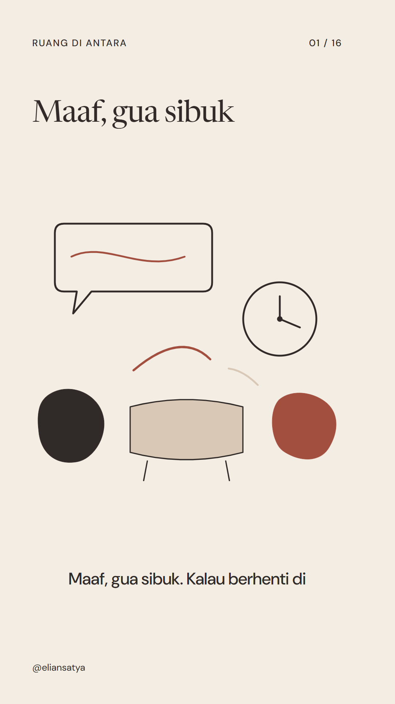
Maaf, gua sibuk. Kalau berhenti di situ, bagian mana yang belum terjawab?
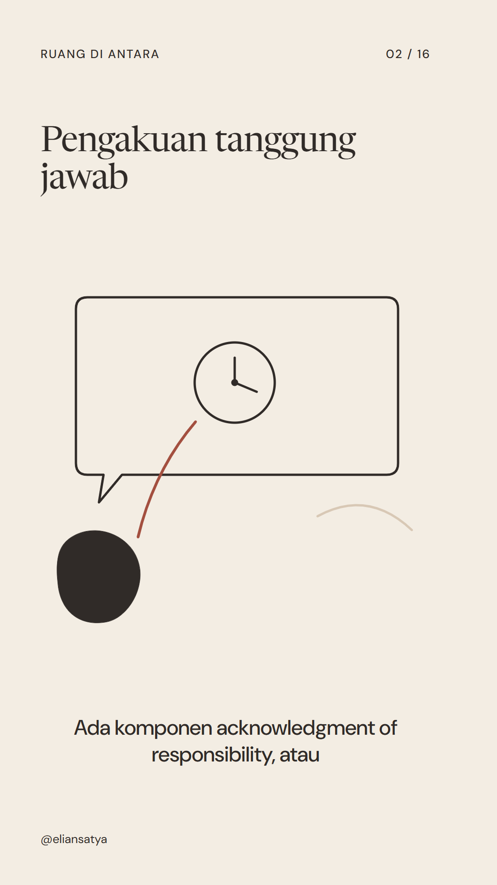
Ada komponen acknowledgment of responsibility, atau pengakuan tanggung jawab, dalam permintaan maaf.
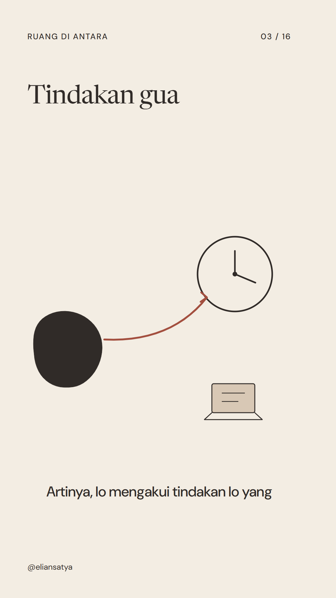
Artinya, lo mengakui tindakan lo yang keliru, sekaligus menjelaskan keadaannya.
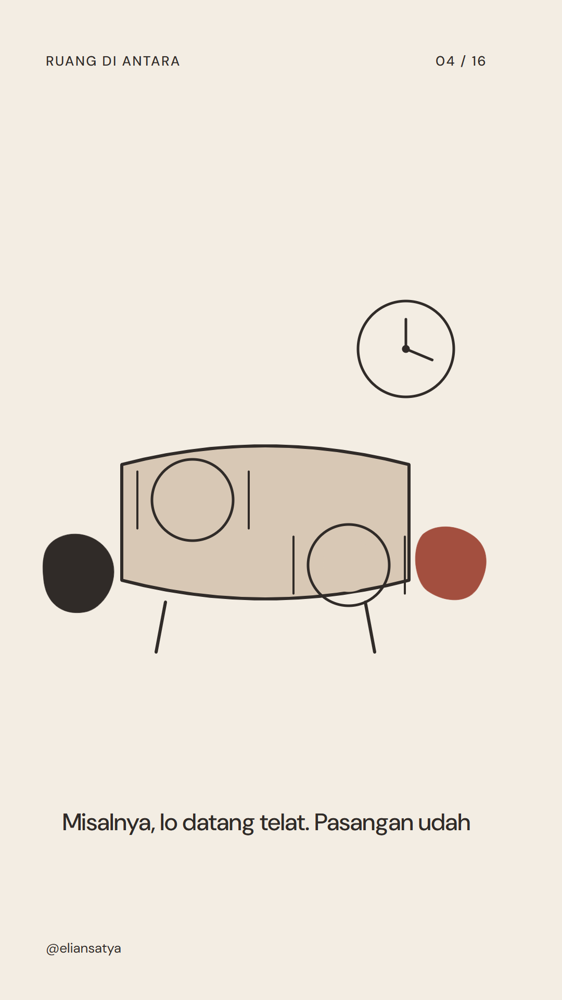
Misalnya, lo datang telat. Pasangan udah menunggu, dan waktu makannya ikut mundur.
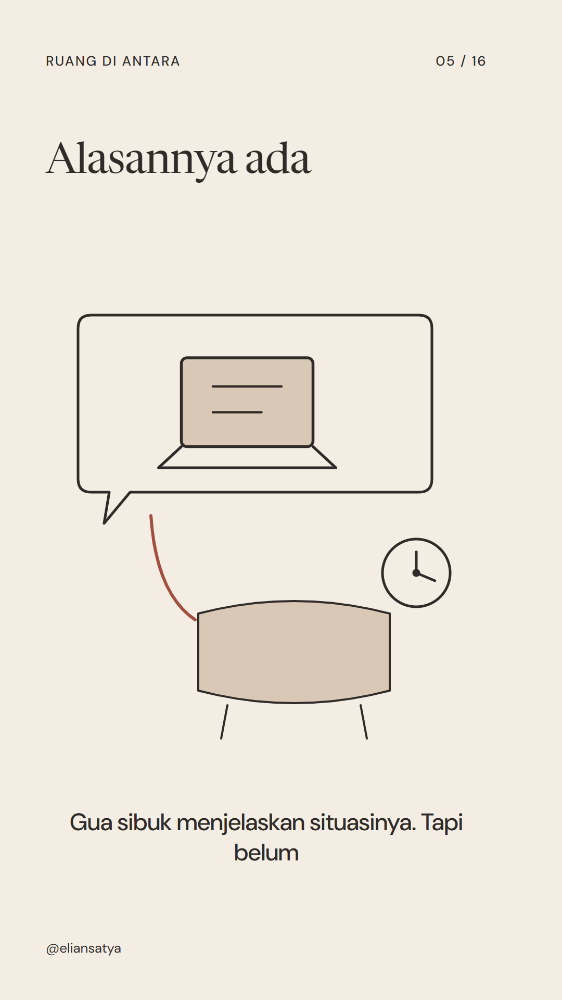
Gua sibuk menjelaskan situasinya. Tapi belum menyebut tindakan lo yang bikin dia menunggu.
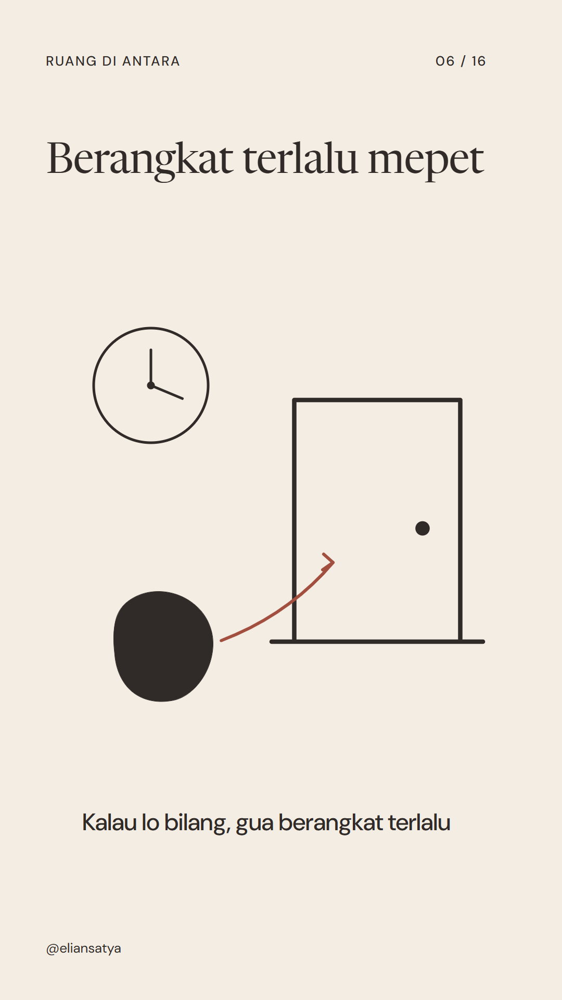
Kalau lo bilang, gua berangkat terlalu mepet, tindakan yang lo akui jadi jelas.
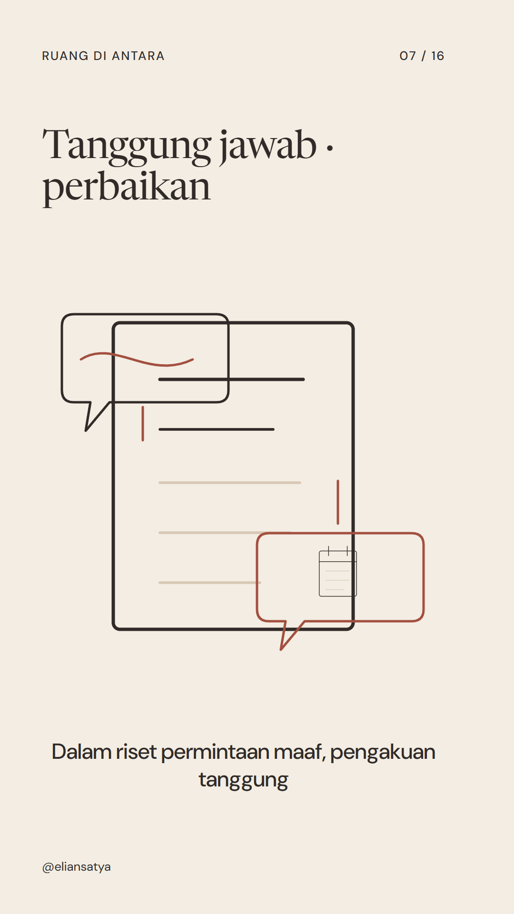
Dalam riset permintaan maaf, pengakuan tanggung jawab dan tawaran perbaikan dinilai penting.
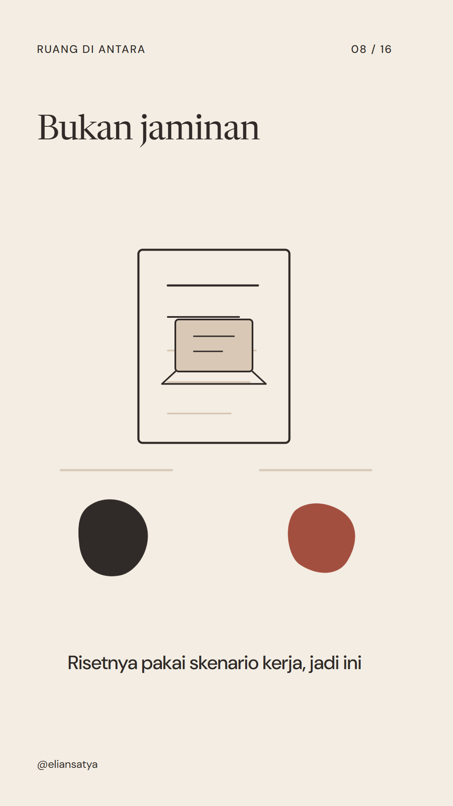
Risetnya pakai skenario kerja, jadi ini bukan rumus agar pasangan pasti memaafkan.
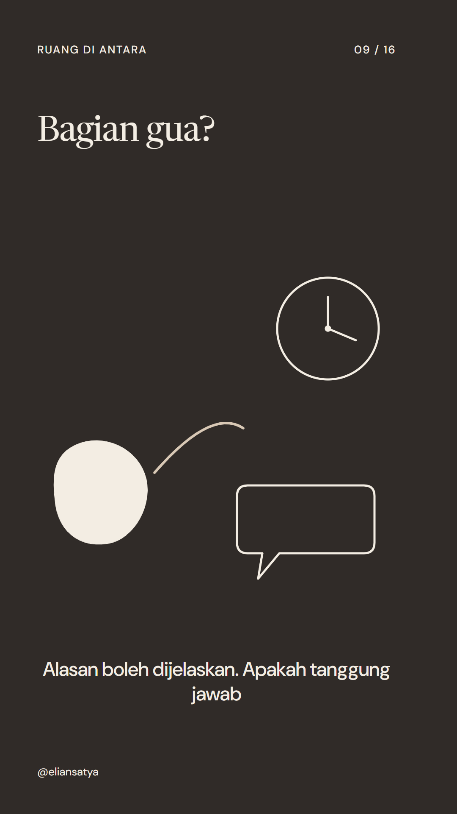
Alasan boleh dijelaskan. Apakah tanggung jawab lo ikut disebut?
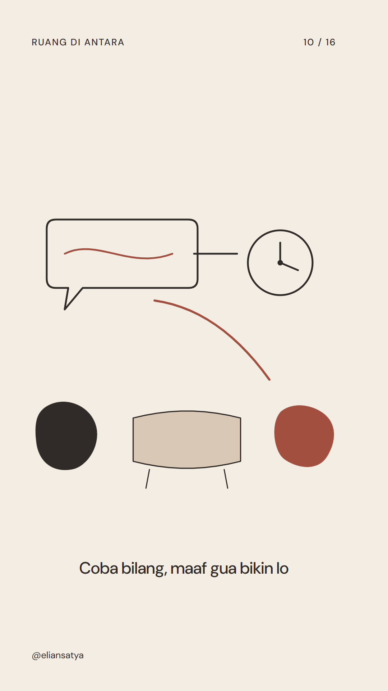
Coba bilang, maaf gua bikin lo nunggu. Gua tadi berangkat terlalu mepet.
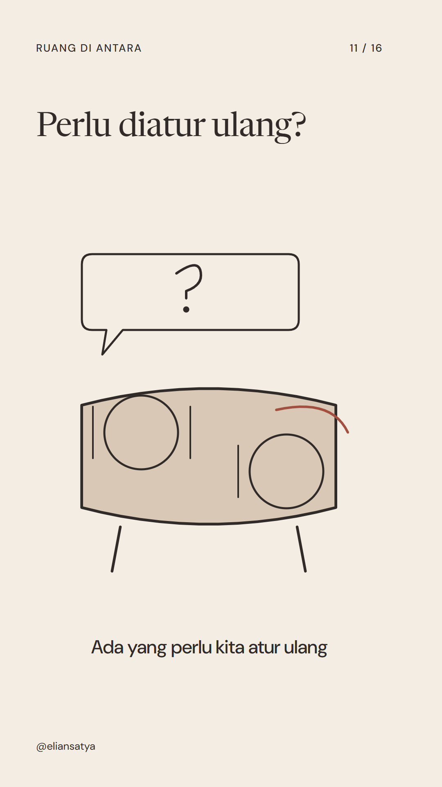
Ada yang perlu kita atur ulang karena keterlambatan gua?
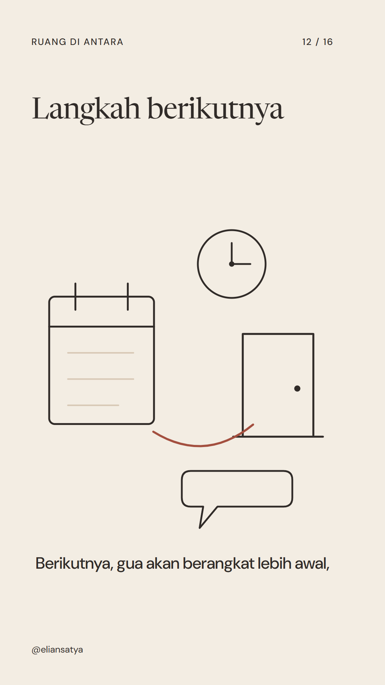
Berikutnya, gua akan berangkat lebih awal, dan kabari kalau jadwalnya berubah.
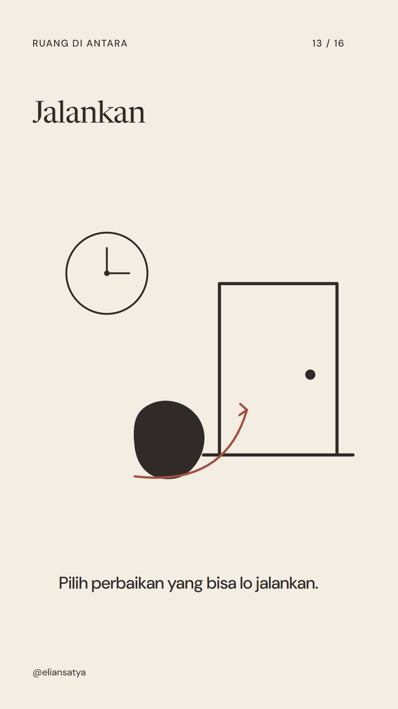
Pilih perbaikan yang bisa lo jalankan. Setelah itu, tindak lanjuti.
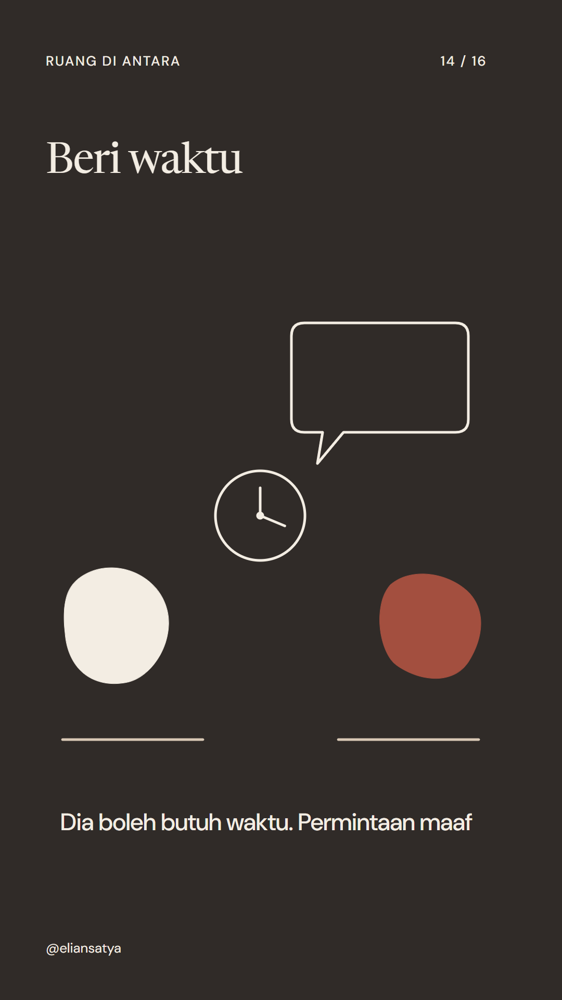
Dia boleh butuh waktu. Permintaan maaf nggak mewajibkan dia langsung merasa lega.
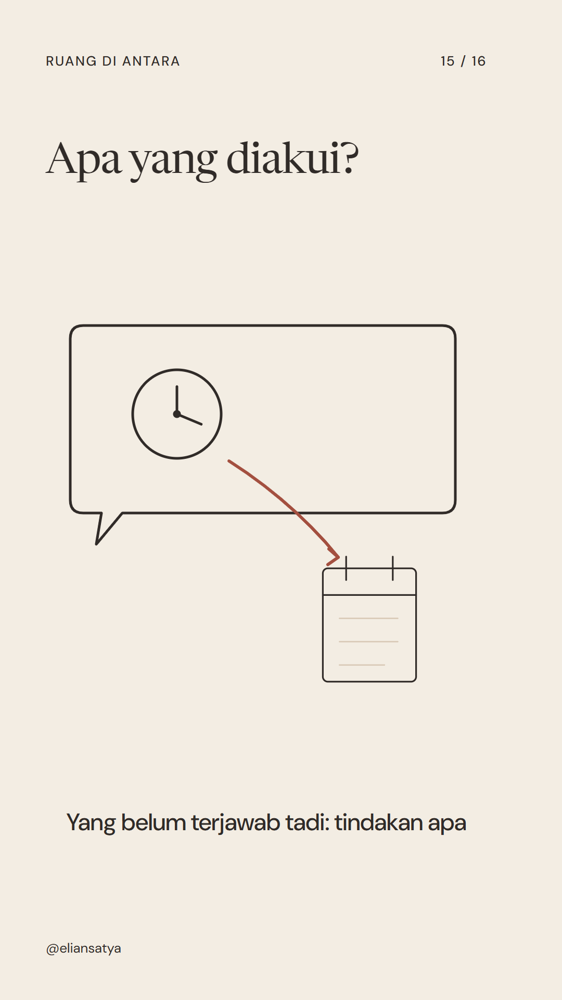
Yang belum terjawab tadi: tindakan apa yang lo akui, dan apa langkah berikutnya?
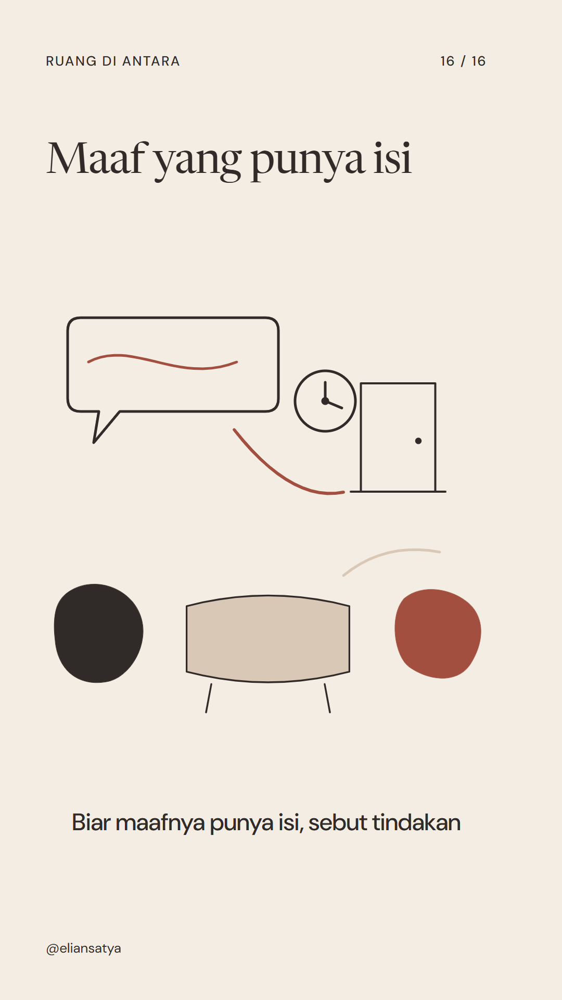
Biar maafnya punya isi, sebut tindakan lo, lalu ikuti dengan perbaikan.